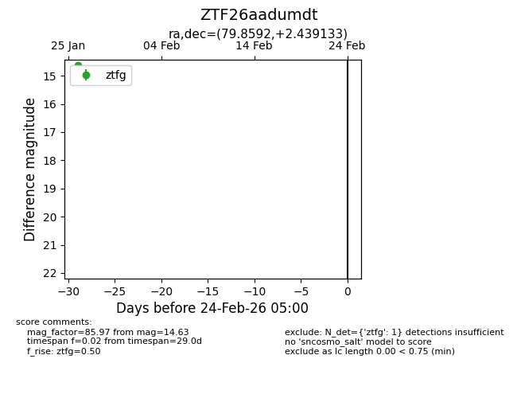
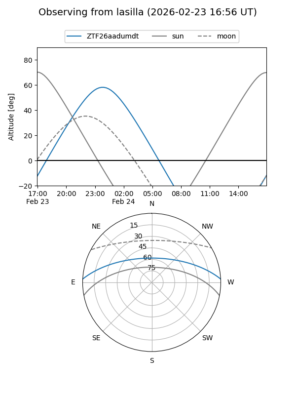
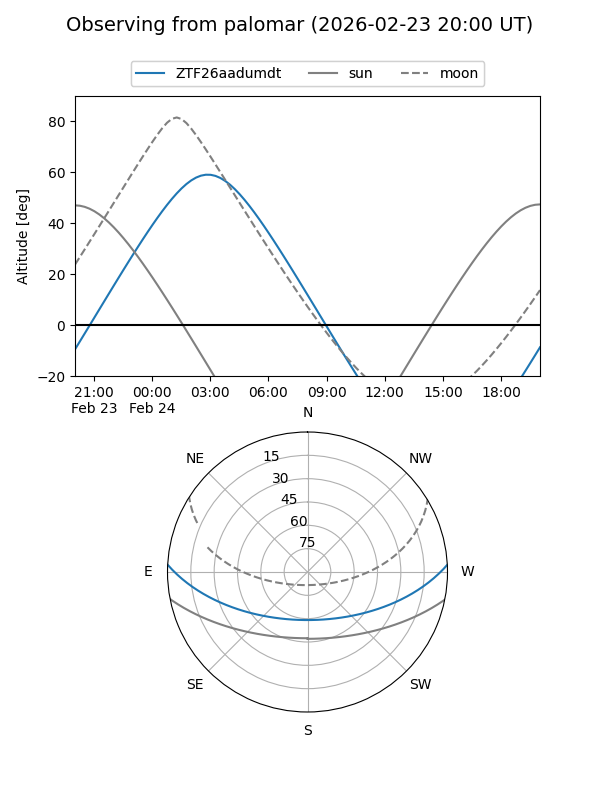

ZTF26aadumdt
Target ZTF26aadumdt at 2026-01-26 07:21
Aliases and brokers:
FINK: link
Lasair: link
ALeRCE: link
alt names
ZTF26aadumdt (ztf,fink_ztf)
Coordinates:
equatorial (ra, dec) = 79.8592,+2.43913
equatorial (HMS+DMS) = 05:19:26.22,+02:26:20.88
galactic (l, b) = (199.7215,-19.14917)
Flags:
Photometry:
last ztfg=14.63
1 ztfg detections
Lightcurve

Visibility


Additional plots